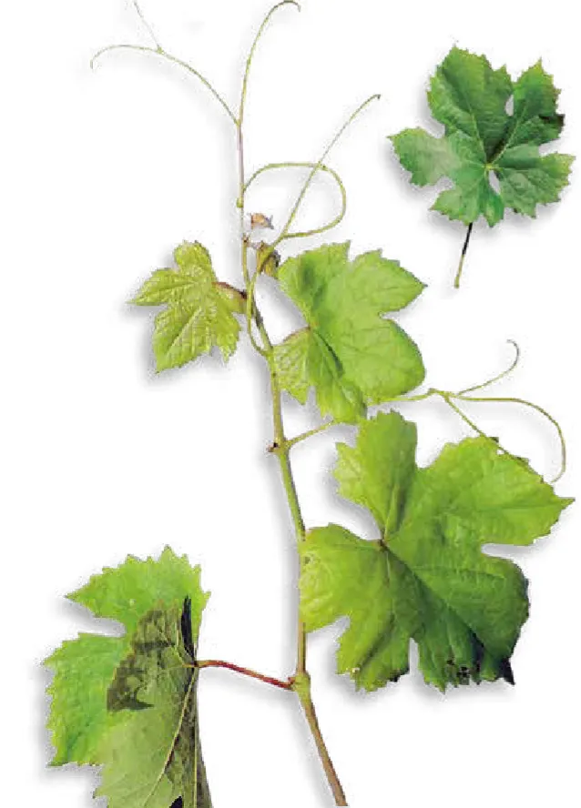
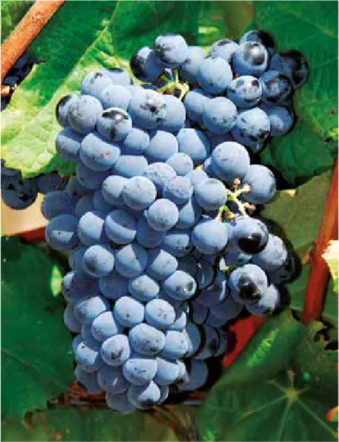

Kapitel 3 · Die portugiesischen Rebsorten
Vinhão (R) / Sousão
Herkunft:
Stammt aus Nordportugal. Rebello da Fonseca (1790) erwähnte die Sorte unter einem ihrer Synonyme. Nach Truel wurde sie 1790 wegen ihrer besseren Farbe aus dem Minho in den Douro eingeführt, um die Douro-Weine zu verbessern. Hauptanbaugebiet: Minho.
Sortenmerkmale:
Die einzige portugiesische Rebsorte mit rotem Fruchtfleisch, die daher als Färbertraube (Teinturier) verwendet werden kann. Die Sorte passt sich schlecht an andere geografische Regionen an und ist deshalb auf den Norden des Landes beschränkt.
Regionale Einstufung:
DOC-Qualitätswein: in allen Unterregionen des Vinho Verde; der irrtümliche Name Souzão erscheint noch in den Vorschriften zur regionalen Sorteneinstufung im Douro.
Landwein: Minho, Trás-os-Montes.
Morphologie:
Junger Trieb (Form der Triebspitze): offen, mittlere Anthocyanfärbung an der stark flaumigen Spitze.
Junges Blatt: gelb mit bronzefarbenen Flecken; Flecken mit Anthocyanfärbung und dichter, flaumiger Behaarung.

Junger Trieb: rote Streifen an Knoten und Internodien auf der Bauchseite. Mittellange Ranken.
Blütenstand (Blütengeschlecht): zwittrig.
Ausgewachsenes Blatt: mittelgroß, keilförmig. Drei-, manchmal fünflappig. Mittelgrüne Spreite, gestreiftes Profil, spärliche bis dichte Blasigkeit. Gerade oder konkav-konvexe Zähne. Leicht offene V-förmige Stielbucht. Offene V-förmige obere Seitenbuchten; Unterseite flaumig, nahe den Hauptadern weniger dicht behaart.
Traube: mittelgroß bis groß, zylindrisch bis konisch, geflügelt. Mittlere bis hohe Dichte. Stiel mittelgroß, mittel verholzt.
Beere: mittelgroß, gleichmäßig. Rund, blauschwarz. Haut mittelstark, stark bereift. Fruchtfleisch gefärbt, weich und sehr saftig. Stielchen mittelgroß.
Phänologie:
Austrieb: 8 Tage nach der Castelão.
Blüte: 6 Tage nach der Castelão.
Farbumschlag der Beere: 6 Tage nach der Castelão.
Lesereife der Beere: spät.
Vegetatives und agronomisches Potenzial:
Wuchskraft der Triebe: mittel bis hoch.
Schnittholzgewicht: von 1.500 kg/ha in warmen Zonen bis 2.000 kg/ha in maritimen Gebieten.
Triebhaltung (Wuchsform): aufrecht.
Trieblänge: mittel.
Neigung zur Geiztriebbildung: mittel.
Mehrfachaustrieb: wenig.
Fruchtbarkeitsindex der Knospen: mittel, 1,8 Blütenstände je Trieb.
Ertrag: mittel, 10.500 kg/ha. Statistischer RNSV-Wert: 6,46 kg/Rebe (Mittel von 40 Klonen in Arcos über 4 Jahre).
Ertragsbeständigkeit: beständig.
Gleichmäßigkeit des Ertrags: gleichmäßig.
Winkler-Index: 1.289 (Mittel).
Empfindlichkeit gegenüber abiotischen Faktoren: empfindlich gegenüber Trockenstress; Trockenschäden treten auf.
Anfälligkeit für Pilzkrankheiten: gewisse Resistenz gegen Oidium und Peronospora; anfällig für Esca.
Anfälligkeit für Schädlinge: anfällig für Rote Spinne.
Traubengröße: mittel bis klein (174–205 g).
Dichte der Traube: mittel.
Beerenhaut: mittelstark.
Erziehungssystem: passt sich an alle Erziehungssysteme an.
Bodenansprüche: offene Böden.
Klimaansprüche: Blattschäden durch Trockenstress. Windresistent.
Bewässerung: bei großer Trockenheit empfohlen.
Verrieseln/Kleinbeerigkeit: nicht anfällig.
Verderb reifer Beeren: gering.
Eignung für maschinelle Lese: gut geeignet.
Önologie:
Weintyp: roter Vinho Verde (leichterer Wein), Tischwein und Portwein.
Potenzieller Alkoholgehalt: mittel bis niedrig (11,5 % vol.).
Statistischer RNSV-Wert: 10,22 % vol. (Mittel von mindestens 40 Klonen in Famalicão über 5 Jahre).
Natürliche Säure des Mostes: hoch (7–9 g/l Weinsäure). Statistischer RNSV-Wert: 11,05 g/l (Mittel von mindestens 40 Klonen in Famalicão über 5 Jahre).
Gesamtanthocyane: statistischer RNSV-Wert 1.274,3 mg/l (Mittel von mindestens 40 Klonen in Famalicão über 1 Jahr).
Gesamtphenolindex des Mostes (bei 280 nm): 60. Statistischer RNSV-Wert: 43,57 (Mittel von mindestens 40 Klonen in Famalicão über 1 Jahr).
Oxidationsrisiko des Mostes: gering.
Farbintensität des Weins: intensiv (19). Cincinnato (1900) nannte die Sorte wegen ihres rot gefärbten Fruchtfleischs eine Besonderheit, bemerkte aber auch, dass an derselben Traube Beeren mit farblosem Fruchtfleisch vorkommen können. Vila Maior (1876) dagegen erklärte, mit dieser Sorte lasse sich durch Vergärung ohne Schalen Weißwein erzeugen. Die einzige Erklärung ist, dass er von einer anderen Sorte mit ähnlich klingendem Namen sprach – ein weiteres Argument dafür, die Sortennamen der Portaria 428/2000 zu überarbeiten.

Farbton des Weins: 0,54, granatrot.
Tannine: monomer 18,6 mg/l; oligomer 65,2 mg/l; polymer 611,2 mg/l.
Oxidationsrisiko des Weins: gering.
Aromaprofil: weinig, Noten von Wildfrüchten, Kräuterdüfte.
Alterungspotenzial: gut.